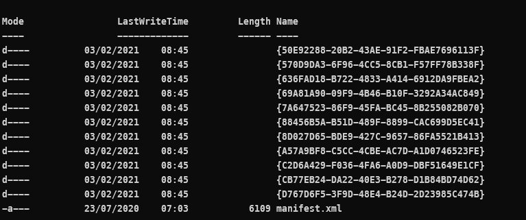
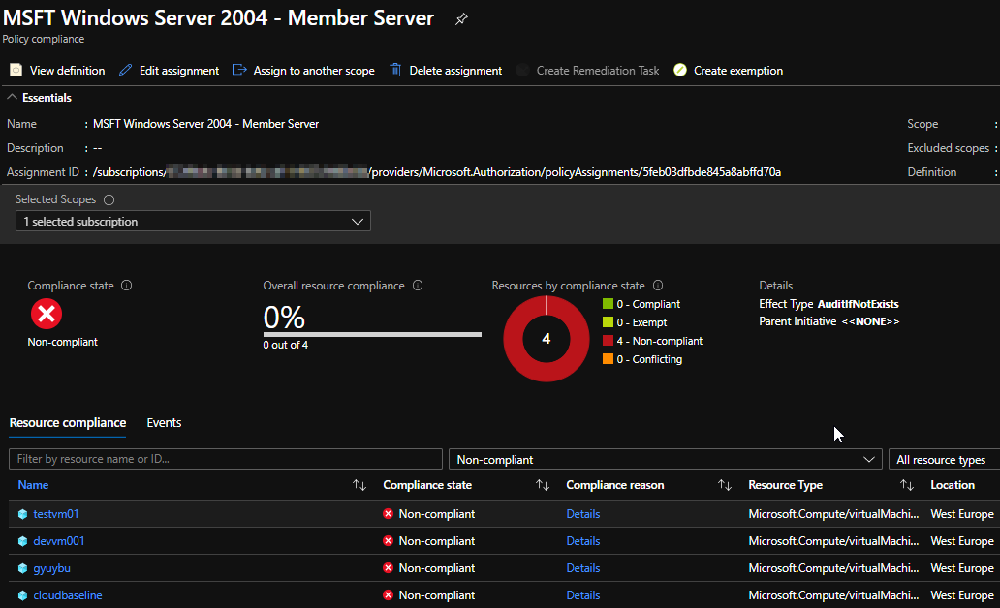
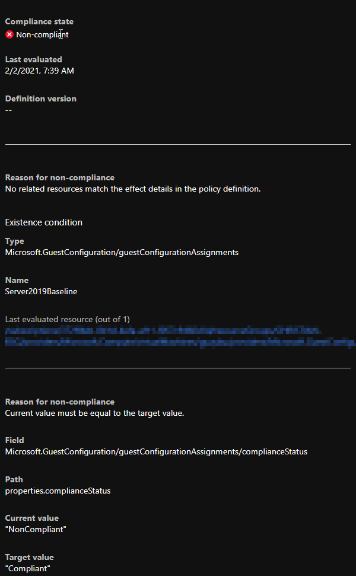
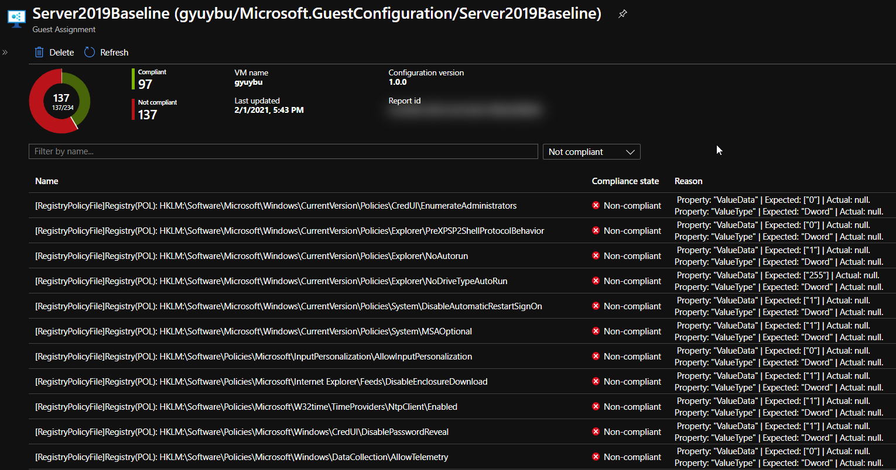

8 minutes
Guest Configuration Policy
Schrödingers Security Policy
What?
I wanted to check compliance vs. a security baseline for OS-hardening without using Qualys. Not that I dislike it or don’t want to use it (on the contrary!), I was just curious how to audit OS-level settings from Azure or Azure DevOps. My primary goal was to check out how to validate our own internal security controls. For production environments I tend to stick to Qualys for vulnerability assessment, but also want to add another control layer.
Group Policy Objects are frequently used within a windows server domain to push settings, like security controls, and validate/reapply them to prevent configuration drift. My challenge was how to audit these settings, while knowing some customers also use Demilitarized Zones (DMZ’s) in Azure. Servers which reside in this network segment are exposed so they are not joined to the domain. But especially these servers do need to be checked on security controls. So there we have our puzzle. How to audit virtual machines on Azure for custom security configurations.
Security control audit-mechanism
To prevent me from making another overengineered solution based on our own security baseline, I went looking for reference data. Luckily Microsoft offers their Windows Security Baselines in exported GPO’s, so we have some reference data to check for in our VM’s. I’d almost want to say half of the puzzle is done! You can find the GPO’s here link.
But this was far from over! I’ve written a few Pester testcases for other projects to validate files and settings, but I was not sure how to pull the audit data back again to some internal management panel to monitor compliance and drill down to what setting. All the cool stuff is in later Pester releases, so I’d have to update the module on VM’s and still exporting/pulling the audit-data was too much of a hassle in my opinion. We have multiple customers but that’s just too much links in the chain. So Pester was not going to cut it for me.
So I was looking for an integrated security audit mechanism to prevent me writing everything and increasing the chance of stuff breaking randomly. So I checked out Automation Accounts and PowerShell Desired State Configuration, can’t blame a PowerShell user right?, but there was no Audit/Monitor mode without applying the security controls. While I really like having safe environments, I really dislike broken applications due to too strict settings. So even with the ApplyAndMonitor this just would be too invasive to try in live environments. So Azure Automation DSC is off the table too.
Something, something dark
I was a bit bugged and unsatisfied in my search for a solution for this challenge, I tend to find things immediately after stopping the search for said things, and I wanted to know more about DSC. To satisfy the knowledge craving I watched a PowerShell Conference EU 2020 video by Gael Colas and Michael Greene, awesome video bit noisy though. I read the outline, but had to stop half way during the video. Boy I missed some nice stuff. I did however spot Azure Policy Guest Configuration on the outline of the talk.
Later on in my search for a solution to the security baseline challenge, I found a quickstart on Microsoft Docs which showed how to create a DSC configuration and .MOF file (compiled DSC configuration) from an exported GPO, which felt a little bit random, but hey let’s see how far we can get.
I converted a GPO from the Microsoft Security Baseline and received some errors, but it did deliver both the configuration.ps1 and .MOF. The modules referenced on the GitHub page of the module were already installed, so I applied it to a test VM using Azure Automation DSC' ApplyAndMonitor configuration. And it workses! Awesome! In case you’d want to export your own GPO’s you can use Backup-GPO for this.
Steps to download all the Windows Security baselines:
@("https://download.microsoft.com/download/8/5/C/85C25433-A1B0-4FFA-9429-7E023E7DA8D8/Windows%2010%20Version%201909%20and%20Windows%20Server%20Version%201909%20Security%20Baseline.zip",
"https://download.microsoft.com/download/8/5/C/85C25433-A1B0-4FFA-9429-7E023E7DA8D8/Windows%2010%20Version%201507%20Security%20Baseline.zip",
"https://download.microsoft.com/download/8/5/C/85C25433-A1B0-4FFA-9429-7E023E7DA8D8/Windows%2010%20Version%201607%20and%20Windows%20Server%202016%20Security%20Baseline.zip",
"https://download.microsoft.com/download/8/5/C/85C25433-A1B0-4FFA-9429-7E023E7DA8D8/Windows%2010%20Version%201803%20Security%20Baseline.zip",
"https://download.microsoft.com/download/8/5/C/85C25433-A1B0-4FFA-9429-7E023E7DA8D8/Windows%2010%20Version%201809%20and%20Windows%20Server%202019%20Security%20Baseline.zip",
"https://download.microsoft.com/download/8/5/C/85C25433-A1B0-4FFA-9429-7E023E7DA8D8/Windows%2010%20Version%201903%20and%20Windows%20Server%20Version%201903%20Security%20Baseline%20-%20Sept2019Update.zip",
"https://download.microsoft.com/download/8/5/C/85C25433-A1B0-4FFA-9429-7E023E7DA8D8/Windows%2010%20Version%201909%20and%20Windows%20Server%20Version%201909%20Security%20Baseline.zip",
"https://download.microsoft.com/download/8/5/C/85C25433-A1B0-4FFA-9429-7E023E7DA8D8/Windows%2010%20Version%202004%20and%20Windows%20Server%20Version%202004%20Security%20Baseline.zip") | Foreach-Object {
Invoke-Webrequest -URI $_ -OutFile ($_.split("/")[-1].replace('%20',' '))}
I’m primairly focussed on the Windows-10-Windows Server-v2004-Security-Baseline-FINAL.zip so I did:
Get-ChildItem Windows-10-Windows Server-v2004-Security-Baseline-FINAL | Expand-archive
This unpacks the zip, and allows us to pursue our journey. Now I was a bit bugged, because I had no idea which folder contains what inside the GPO folder (I don’t speak GUID). Luckily there’s an XML with the correct information.
[xml]$xml = Get-Content .\manifest.xml
$guidtogpo = $xml.Backups.BackupInst | Select-Object @(
@{ n='ID'; e={ $_.ID.'#cdata-section' }}
@{ n='DisplayName'; e={ $_.GPOdisplayname.'#cdata-section' }}
)
Thanks to help from the PowerShell discord I was able to unraffle the above, I was looking in the wrong direction (Select-XML).
Configuration names can only contain alphanumerical characters and underscores, so knowing that I want to use the GPO MSFT Windows Server 2004 - Member Server I replace the spaces with underscores and convert the GPO inside the folder to a DSC configuration and MOF-file.
"MSFT Windows Server 2004 - Member Server" -replace '[\s-]', '_'
MSFT_Windows_Server_2004_-_Member_Server
ConvertFrom-GPO -Path '.\{A57A9BF8-C5CC-4CBE-AC7D-A1D0746523FE}\' -OutputConfigurationScript -ConfigName "MSFT_Windows_Server_2004___Member_Server"
This creates an Output folder by default, which contains a configuration and MOF file.
Later that week I saw a post on Twitter by Thomas Maurer mentioning Azure Policy Guest Configuration, waaait a minute I saw that before! I read the Microsoft Docs page and came to the conclusion, this was my missing link to my solution! This was also the moment I realized I had performed the first steps in the quickstart on the Docs page, but no harm in doing so then!
Azure Policy Guest Configuration
Maybe it’s my English reading profiency, but I just couldn’t really figure out what the quickstart was guiding me through. I think others will have no problem following the quickstart. Azure Policy Guest Configuration uses a .MOF-file and modules to validate local settings and report the compliance status on Azure Policy. The VM’s require a Managed Identity and a VM extensions, both of which can be deployed via a default initiative. The MOF-file and technical prerequisites must be packaged. It uses a distinct PowerShell instance and doesn’t interfere with DSC if it’s already utilized on the VM.
The steps to be taken could be summarized to:
- Create a .MOF file with security controls based on the GPO-export using
ConvertFrom-GPO(Baseline Management). - Make a package with configuration using
New-GuestConfigurationPackage. - (Maybe test configuration on VM using
Test-GuestConfigurationPackage), can also be piped fromNew-GuestConfigurationPackage. - Use
Publish-GuestConfigurationPackageto publish the configuration to a storage container in an Azure Storage Account and produce a sharing link with SAS-token. - Use the link + sas token, displayname, a description, platform specifion and potentially a tag filter, an Azure Policy is created with
New-GuestConfigurationPolicy. - Publish the said policy and apply it to a scope.
The cmdlets are from the PowerShell module GuestConfiguration. Ok,ok, so far so good.
Let’s gooooo
So I went and started, anddd I failed. Aand failed again. Until I started read a bit more carefully.
The error message was the following:
Set-AzStorageBlobContent: C:\Users\ChristianPiet\Documenten\PowerShell\Modules\GuestConfiguration\3.0.0\GuestConfiguration.psm1:469
Line |
469 | $Blob = Set-AzStorageBlobContent -Context $Context `
| ~~~~~~~~~~~~~~~~~~~~~~~~~~~~~~~~~~~~~~~~~~~~
| The specified container does not exist. HTTP Status Code: 404 - HTTP Error Message: The specified container does not exist. ErrorCode: ContainerNotFound ErrorMessage: The specified container does not exist.
I wasn’t sure which container it couldn’t find. One look in the .psm1 file and I found that the storageaccount container by default is named guestcontainer. Later I thought why bother looking there if Get-Help also would suffice, doh! But onward I went and deployed the Policy.
I received a policy-ID and saw it in the Azure Policy blade, awesome!! I assigned the initiative [Preview]: Deploy prerequisites to enable Guest Configuration policies on virtual machines or /providers/Microsoft.Authorization/policySetDefinitions/12794019-7a00-42cf-95c2-882eed337cc8 so the VM’s receive the proper pre-requisites and the long Policy wait has begun.
The initiative contains the following (Policies and Effect Type):
- Add system-assigned managed identity to enable Guest Configuration assignments on virtual machines with no identities, Modify;
- Add system-assigned managed identity to enable Guest Configuration assignments on VMs with a user-assigned identity, Modify;
- Deploy the Windows Guest Configuration extension to enable Guest Configuration assignments on Windows VMs, DeployIfNotExists;
- Deploy the Linux Guest Configuration extension to enable Guest Configuration assignments on Linux VMs,DeployIfNotExists;
After a while the VM’s had a Managed Identity in Azure AD and the proper extension: AzurePolicyforWindows.
It took a while for all VM’s to be processed, it stated for a long time:
Reason for non-compliance No related resources match the effect details in the policy definition.
So a nice bowl of spaghetti later, and the details pane of the VM showed a new item: Last evaluated resource (out of 1) with a clickable resource-id. This gives the nice overview over all VM’s with a drilldown on settings, this is exactly what I needed and what I’d expect from an integrated tool to assess compliance of each setting. I really like it, it ticks all the boxes for the said challenge.
Policy Compliance
VM Compliance details overview
VM Compliance
Next steps are automating deployment to customers with tag filtering and creating a build pipeline when a new security policy is designed!